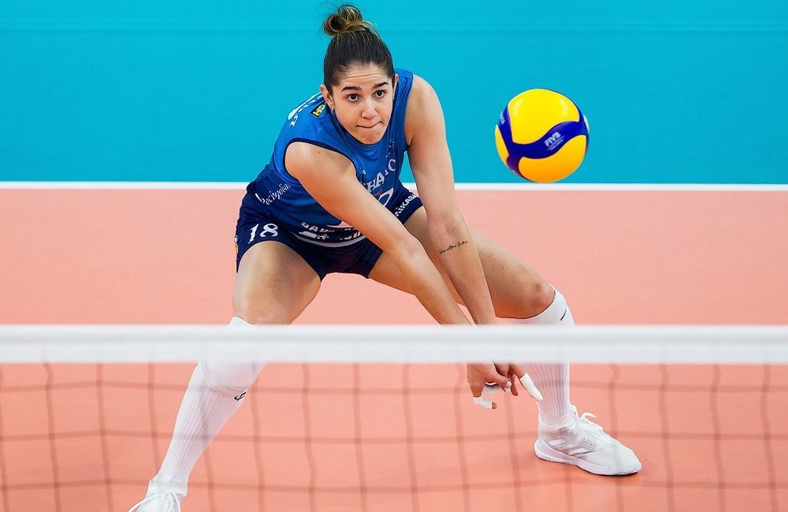
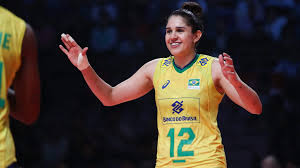
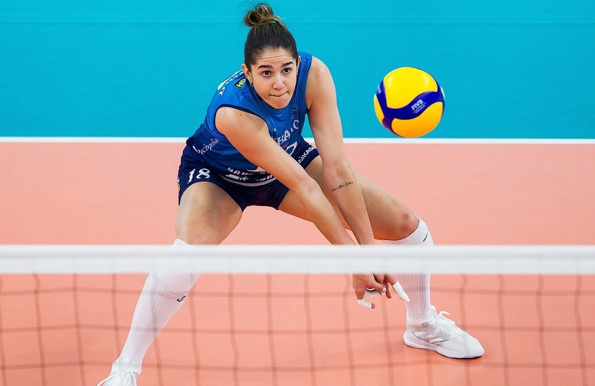
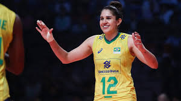
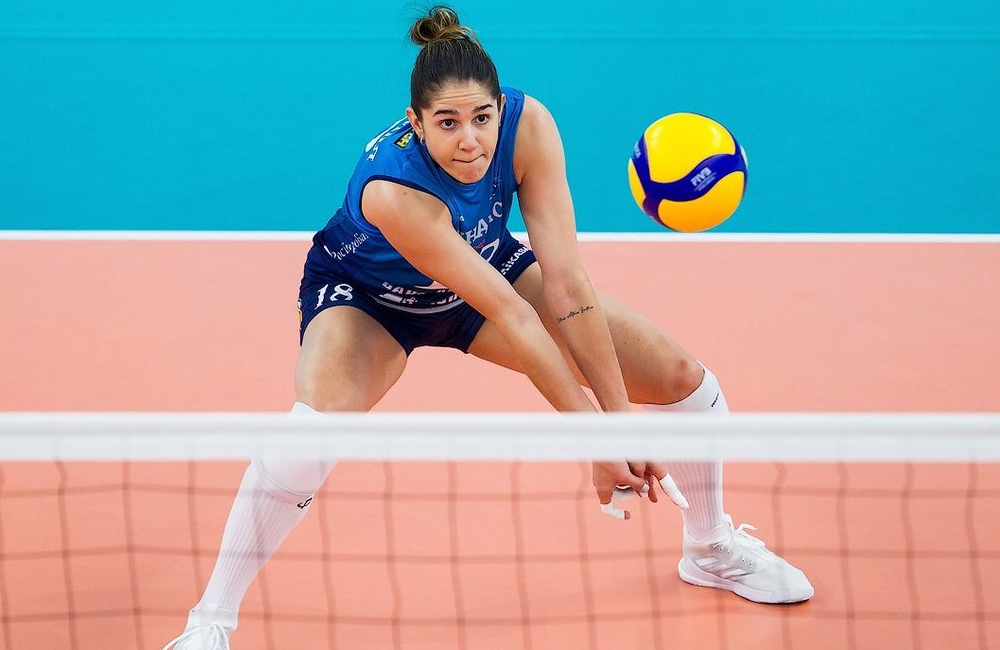
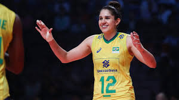

Natália se aposenta da seleção de vôlei: "Estava difícil de continuar"


Natália Zilio não vai mais jogar pela seleção brasileira de vôlei. A ponteira, campeã olímpica em Londres 2012, alegou questões pessoais e já comunicou sua decisão ao técnico José Roberto Guimarães. A notícia foi inicialmente publicada pelo jornalista Gustavo Santos, do site “To Fly Volleyball”, e confirmada pela reportagem do ge. Em rápido contato com o ge, Natália confirmou a decisão. Ela afirmou que estava esperando o momento certo para confirmar a despedida. - Só estava esperando falar alguma coisa. Eu não volto mais. É questão pessoal. Eu até brinco com todo mundo, estou ficando velha. Decidi que minha prioridade agora é focar mais no clube. Estou cansada. Quem acompanha nossa carreira há tanto tempo sabe o quanto é difícil a nossa vida. Estava meio difícil de continuar - disse a ponteira.
A ponteira, no entanto, seguirá jogando por clubes. Atualmente, ela defende o Scandicci, da Itália, mas já tem acordo para voltar a jogar pelo Dínamo Moscou a partir da próxima temporada. Natália surgiu como uma das maiores revelações do vôlei brasileiro. Aos 17 anos, já era titular do Osasco. Acumulou títulos também pelo Rio de Janeiro, para onde se transferiu, e ganhou sequência na seleção. Em 2011, descobriu um tumor na canela. Ficou fora das quadras por um ano e três meses e por pouco não perdeu os Jogos de Londres. À época, Zé Roberto esperou até o limite para contar com a jogadora no grupo que levaria o ouro.
Em 2013, um exame antidoping apontou a presença de 16-OH Prednisolone acima dos níveis permitidos. A substância estava em um dos três remédios que a atleta tomava para tratar uma asma. Ela foi suspensa por 60 dias por conta disso. A ponteira conviveu com lesões durante todas as temporadas seguintes. Pouco antes dos Jogos de Tóquio, no ano passado, chegou a fraturar um dedo da mão. Mas se recuperou a tempo de ajudar na campanha que terminou com a prata em Tóquio.
De promessa a capitã da seleção, Natália esteve presente nos últimos três ciclos olímpicos. Além dos Jogos de Londres e de Tóquio, também disputou as Olimpíadas do Rio, quando a seleção caiu nas quartas de final para a China. A ponteira ainda conquistou uma prata e um bronze em Mundiais, em 2010 e 2014, respectivamente.
Natália Zilio não vai mais jogar pela seleção brasileira de vôlei. A ponteira, campeã olímpica em Londres 2012, alegou questões pessoais e já comunicou sua decisão ao técnico José Roberto Guimarães. A notícia foi inicialmente publicada pelo jornalista Gustavo Santos, do site “To Fly Volleyball”, e confirmada pela reportagem do ge. Em rápido contato com o ge, Natália confirmou a decisão. Ela afirmou que estava esperando o momento certo para confirmar a despedida. - Só estava esperando falar alguma coisa. Eu não volto mais. É questão pessoal. Eu até brinco com todo mundo, estou ficando velha. Decidi que minha prioridade agora é focar mais no clube. Estou cansada. Quem acompanha nossa carreira há tanto tempo sabe o quanto é difícil a nossa vida. Estava meio difícil de continuar - disse a ponteira.
A ponteira, no entanto, seguirá jogando por clubes. Atualmente, ela defende o Scandicci, da Itália, mas já tem acordo para voltar a jogar pelo Dínamo Moscou a partir da próxima temporada. Natália surgiu como uma das maiores revelações do vôlei brasileiro. Aos 17 anos, já era titular do Osasco. Acumulou títulos também pelo Rio de Janeiro, para onde se transferiu, e ganhou sequência na seleção. Em 2011, descobriu um tumor na canela. Ficou fora das quadras por um ano e três meses e por pouco não perdeu os Jogos de Londres. À época, Zé Roberto esperou até o limite para contar com a jogadora no grupo que levaria o ouro.
Em 2013, um exame antidoping apontou a presença de 16-OH Prednisolone acima dos níveis permitidos. A substância estava em um dos três remédios que a atleta tomava para tratar uma asma. Ela foi suspensa por 60 dias por conta disso. A ponteira conviveu com lesões durante todas as temporadas seguintes. Pouco antes dos Jogos de Tóquio, no ano passado, chegou a fraturar um dedo da mão. Mas se recuperou a tempo de ajudar na campanha que terminou com a prata em Tóquio.
De promessa a capitã da seleção, Natália esteve presente nos últimos três ciclos olímpicos. Além dos Jogos de Londres e de Tóquio, também disputou as Olimpíadas do Rio, quando a seleção caiu nas quartas de final para a China. A ponteira ainda conquistou uma prata e um bronze em Mundiais, em 2010 e 2014, respectivamente.